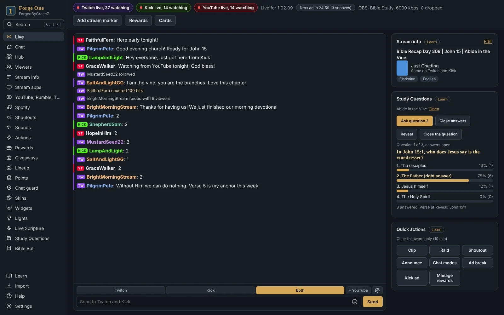

01 / IN YOUR COMMUNITY
Forge Bible Bot
Bring Scripture, prayer, and Bible engagement into your community chats.
Explore Forge Bible Bot ↗FaithForge Streamer — ForgeByGrace7
Marine veteran • Creator • Redeemed by Jesus
Saved by grace. Transformed daily.
Hey, I’m Dan. I’m a Marine veteran, in recovery from addiction with the help of Christ, and redeemed by Jesus. Today, I’m serving Him through faith, gaming, community, and the tools I create.
This is a space for prayer, worship, and honest faith. Whether you’re curious, struggling, or seeking hope, you’re welcome here.
Spend some time at the forge
Pull up a seat for music, gaming, prayer, and real conversation with ForgeByGrace7.
Loads Twitch content. You can also watch directly on Twitch below.
Follow ForgeByGrace7 on Twitch, check the community calendar, or join Discord for the next stream announcement.
If the player is blocked or unavailable, open the channel directly.
Join the conversation on Dan’s Twitch channel.
There’s room for you in the conversation.
Use “Load Twitch player & chat” above, or open Twitch chat ↗.
Created by Dan · Built to serve
Faith in action, one tool at a time. Dan is the creator behind Forge Bible Bot, Forge One, and the Forge Bible Bot Live Twitch extension.
Bring Scripture, prayer, and Bible engagement into your community chats.
Explore Forge Bible Bot ↗
A desktop companion that brings streaming tools and community chats together.
Discover Forge One ↗A Twitch extension bringing Scripture and Bible games to the channel experience.
See the Twitch extension ↗Music, variety gaming, and an encouraging place to spend time together.
Explore recent broadcasts on Twitch ↗ or visit his YouTube channel ↗ for videos and highlights.
For Dan’s stream announcements and schedule updates, join The Forge Discord ↗. The calendar below shows FaithForge Gaming community events and is not a fixed personal stream schedule.
Times are shown in Eastern Time (America/New_York), adjusting for daylight saving time. Open calendar ↗
Dan is a Marine veteran, a Christian creator, and a man whose life has been changed by Jesus. His story of recovery shapes the heart behind his streams and the tools he builds: sharing hope, making room for honest faith, and serving others.
Military service is part of Dan’s story. Today, his calling is to serve Christ and encourage the people around him.
Sober since January 7, 2024. Dan shares a testimony of recovery with Christ’s help and daily transformation by grace.
A welcoming space for music, variety gaming, prayer, and conversations about the hope found in Jesus.
Creator of Forge Bible Bot, Forge One, and Forge Bible Bot Live, helping online communities connect around Scripture.
A story still being written
Dan’s story includes military service and addiction, but it also holds recovery, redemption, and a new purpose in Christ. With the help of Jesus, he has been sober since January 7, 2024. He is saved by grace and being transformed daily.
Today, he is serving Jesus through the community he gathers and the tools he creates. His streams make space for prayer, worship, and honest faith. Whether you are curious, struggling, or seeking hope, you are welcome here.
“Therefore if any man be in Christ, he is a new creature: old things are passed away; behold, all things are become new.”
2 Corinthians 5:17 · KJV
Recovery is part of Dan’s testimony. Grace is at the heart of it. The message he shares is rooted in 2 Corinthians 5:17: in Christ, there is a new beginning.
That same hope runs through ForgeByGrace7 and the Forge family of tools: serving Jesus, encouraging people, and keeping Scripture close to the communities we call home.
Come for a stream. Stay for the fellowship. Whether you’re seeking hope, asking questions, or just looking for community, there’s a place for you here.
Meet the person behind the stream and the Forge family.
ForgeByGrace7 is Dan, a Marine veteran, Christian streamer, and the creator of Forge Bible Bot, Forge One (Forge1), and the Forge Bible Bot Live Twitch extension. He is in recovery from addiction, redeemed by Jesus, and serving Him.
Dan shares music, variety gaming, prayer, worship, and honest conversations about faith in a welcoming, encouraging community. Follow his Twitch channel or join The Forge Discord for the latest streams and announcements.
Everyone is welcome. Whether you are curious about faith, struggling, or seeking hope, there is a place for you here. The community centers on Jesus, prayer, worship, and encouragement.
They are tools created by Dan to serve online communities: Forge Bible Bot brings Scripture and community features to chats; Forge One is a desktop companion for streamers; Forge Bible Bot Live is a Twitch extension. Visit the official project pages for current features and availability.
Dan has been sober since January 7, 2024. He shares his story of recovery with the help of Christ, redemption in Jesus, and daily transformation by grace.
Find Dan on Twitch, YouTube, Kick, and Razo through the links on this page. Join The Forge Discord for community, fellowship, prayer, and project updates. His existing social accounts use the name ForgedByGrace7.